제1 장 서론
1.1 연구배경
모빌리티 산업은 지난 10 년간 디지털 기술의 발전과 소비자 행동 패턴의 변화로 급격한 혁신의 물결을 경험하고 있다. 특히 한국의 도시 환경에서 주차 공간 부족, 차량 유지비용 증가, 환경 문제에 대한 인식 확대 등은 전통적인 자동차 소유 개념에서 벗어난 새로운 모빌리티 서비스의 필요성을 증대시켰다.
이러한 배경 속에서 2011 년 국내 카셰어링 시장의 후발주자로 등장한 쏘카는 IoT 기술과 차량원격제어시스템을 기반으로 기존 렌터카 산업과 차별화된 서비스 경험을 제공하며 급속한 성장을 이루었다. 특히 쏘카는 물리적 키 없이 스마트폰 앱만으로 차량을 이용할 수 있는 완전한 무인 서비스 시스템과 데이터 기반의 차량 배치 최적화 전략을 통해 기존 렌터카 서비스와의 차별화된 가치를창출했다. 그린카보다 시장에 늦게 진입한 후발주자였음에도 불구하고, 2014 년부터 매출을 역전하며 2023 년 4 월기준 국내 카셰어링 시장의 83.4%를 차지하고업계 1 위 브랜드인지도를 가진 선도 기업으로 자리매김했다. 이러한 성공은 단순한 비즈니스 모델 혁신을 넘어, IoT 기술과 데이터 분석을 활용한 기술적 혁신에 기반한 것으로 보인다.
디지털 기술의 발전과 함께 다양한 산업이 파괴적 혁신의 위협에 노출되고있는 현재, 쏘카의 사례는 전통적인 산업에서 기술 기반 혁신이 어떻게 시장 구조를 재편하고 새로운 가치를 창출할 수 있는지를 보여주는 중요한 연구 대상이다. 특히 후발주자로서 기술 혁신과 데이터 활용을 통해 시장 지배력을 확보한 쏘카의 전략은 디지털 전환 시대의 기업들에게 유의미한 시사점을 제공할것으로 기대된다.
이에 본 연구는 쏘카의 카셰어링 서비스 사례를 파괴적 혁신 이론과 네트워크 효과 이론을 중심으로 분석하여, 기술 기반 기업이 어떻게 기존 산업 구조에도전하고 지속가능한 경쟁우위를 구축할 수 있는지를 규명하고자 한다.
1.2 연구목적 및 연구문제
본 연구의 목적은 쏘카의 카셰어링 서비스 사례를 통해 기술 기반 혁신이 어떻게 전통적인 산업 구조를 변화시키고 새로운 시장을 창출하는지 분석하는 것이다. 구체적으로 IoT 기술과 데이터 분석 역량을 바탕으로 한 쏘카의 파괴적혁신 과정과 네트워크 효과를 통한 경쟁우위 구축 메커니즘을 규명하고자 한다.
또한 후발주자임에도 불구하고 시장 선도자로 성장한 쏘카의 전략적 접근을 분석함으로써, 디지털 전환 시대에 기술 스타트업과 기존 기업들에게 유의미한 실무적 함의를 제공하는 것을 목표로 한다.
Research Question 1: 쏘카의 카셰어링 서비스는 크리슨텐슨이 정의한 파괴적혁신에 해당하는가?
Research Question 2: 쏘카는 후발주자임에도 불구하고 어떻게 네트워크 효과와락인 효과를 구축하여 시장 선도 기업으로 성장할 수 있었는가?
기존 카셰어링 관련 연구들은 주로 서비스 이용자의 행동 특성 분석이나 도시 교통 체계에 미치는 영향 등에 초점을 맞춰 왔다. 특히 해외 연구들은 Zipcar 나 Car2go 와 같은 선진 사례를 바탕으로 카셰어링의 일반적 특성과 사회적 효과를 분석하는 데 집중했으며, 국내 연구 역시 카셰어링 서비스의 수용 요인이나 사용자 만족도 분석에 머물러 있었다. 또한 대부분의 연구들이 비즈니스모델의 표면적 특징에만 주목했을 뿐, 기술적 혁신과 비즈니스 모델 혁신이 어떻게 결합되어 경쟁우위를 창출하는지에 대한 심층적 분석은 부족했다.
본 연구는 단순한 서비스 특성 분석을 넘어 IoT 기반 차량원격제어시스템과데이터 분석 역량이 어떻게 비즈니스 모델 혁신과 결합되어 시너지를 창출하는지를 기술-비즈니스 통합 관점에서 분석한다. 크리스텐슨의 파괴적 혁신 이론을엄밀하게 적용하여 쏘카의 혁신이 단순한 서비스 개선이 아닌 새로운 시장을창출하는 파괴적 혁신에 해당하는지를 체계적으로 검증한다. 또한, 후발주자였던 쏘카가 어떻게 선발주자인 그린카를 추월하여 시장 리더로 성장할 수 있었는지 그 전략적 차별화 메커니즘을 규명함으로써, 경쟁 환경에서의 혁신 전략에대한 새로운 통찰을 제공한다.
제 2 장 이론적 배경
2.1 카셰어링(Car Sharing) 서비스의 정의
카셰어링(Car Sharing)은 자동차를 소유하지 않고 필요한 시간만큼 대여 또는이용하는 서비스로, 공유경제의 대표적인 모델이다. 기존 렌터카 산업이상대적으로 장기적인 대여 모델에 집중하는 반면, 카셰어링은 단시간 이용에특화되어 있는 특징을 지닌다(Cusumano, 2015). 두 산업 모두 개인 소유 차량사용의 대안적 이동 수단을 제공한다는 공통점이 있으나, 서비스 특성과 이용형태에서는 뚜렷한 차이점을 보인다(신민성·배상훈, 2012).
<표 1> 렌터카와 카셰어링 서비스의 비교
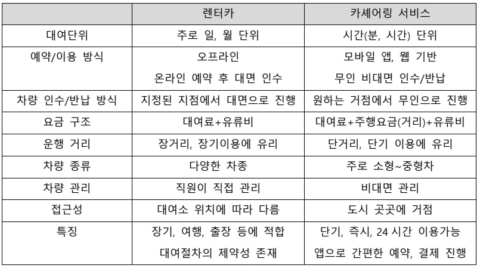
렌터카 카셰어링 서비스
대여단위 주로 일, 월 단위 시간(분, 시간) 단위
예약/이용 방식 오프라인 모바일 앱, 웹 기반온라인 예약 후 대면 인수 무인 비대면 인수/반납
차량 인수/반납 방식 지정된 지점에서 대면으로 진행 원하는 거점에서 무인으로 진행
요금 구조 대여료+유류비 대여료+주행요금(거리)+유류비
운행 거리 장거리, 장기이용에 유리 단거리, 단기 이용에 유리
차량 종류 다양한 차종 주로 소형~중형차
차량 관리 직원이 직접 관리 비대면 관리
접근성 대여소 위치에 따라 다름 도시 곳곳에 거점특징 장기, 여행, 출장 등에 적합 단기, 즉시, 24 시간 이용가능대여절차의 제약성 존재 앱으로 간편한 예약, 결제 진행
전통적인 렌터카 산업은 차량 구매, 보험, 유지관리 등에 높은 초기 투자비용이 수반되어 대형 업체, 특히 대기업 계열사들이 주도하는 과점적 시장구조를 형성해 왔다. 이러한 높은 진입장벽은 신규 업체의 시장 진입을제한하는 요인으로 작용했다. 렌터카 서비스는 주로 여행, 출장 등 특정 목적을위한 중장기 대여에 초점을 맞추고 있으며, 대여 기간에 비례하여 비용이산정되는 특징을 가진다. 이용 방식에 있어서도 고객이 지정된 임대 지점을직접 방문하여 대면 계약절차를 통해 차량을 수령하고 반납해야 하는 절차가요구된다. 반면, 카셰어링 서비스는 도시 내 단기 이동이나 긴급한 필요 상황에최적화되어 있어 수 시간에서 하루 정도의 짧은 시간 동안 필요할 때만 차량을이용할 수 있다. 카셰어링은 도시 곳곳에 분산된 거점에서 유연하게 차량을빌리고 반납할 수 있으며, 모바일 애플리케이션을 통한 실시간 예약과 물리적키 없이 스마트폰만으로 차량을 이용할 수 있는 비대면 서비스를제공한다(이영교·안전희, 2019). 이러한 특성은 사용자 편의성과 접근성을 크게향상시켰다. 기존 렌터카 기업들이 특별시, 5 대 광역시, 제주도 등 대도시와관광지에 지점을 집중적으로 운영하는 '소거점 다수차량' 전략을 채택한 것과달리, 카셰어링은 도심 내 다수의 소규모 거점을 확보하는 '다거점 소수차량'
전략을 통해 접근성을 극대화했다. 또한 렌터카 산업이 차별화를 위해 다양한차종(프리미엄 수입차 포함)을 보유하는 데 중점을 둔 반면, 카셰어링은 IoT 기술과 데이터 분석을 활용한 서비스 편의성과 운영 효율성 향상에 초점을맞추고 있다.
이처럼 카셰어링은 전통적인 렌터카 산업의 일 단위 위주 요금제, 영업시간내 대면 계약 필요성, 데이터 기반 실시간 수요 예측 및 대응 체계 부재 등의구조적 제약을 디지털 기술로 극복하고, 시간 단위 요금제, 24 시간 무인 서비스, 데이터 기반 운영 최적화 등을 통해 차별화된 가치를 제공하는 새로운모빌리티 서비스 모델로 정의할 수 있다.
2.2 카셰어링 산업 현황
2.2.1 글로벌 카셰어링 산업 현황
카셰어링 서비스는 1948년 스위스 취리히에서 'Sefage(Selbstfahrergemeinschaft)' 라는 협동조합이 설립되어, 자동차를 공동으로 구매하고 비용을 분담해 이용하는 형태로 카셰어링의 개념이 처음 등장하였다. 이는 상업적 서비스라기보다는공동체 기반의 자발적 공유에 가까웠으며, 본격적인 사업화와 대중적 확산은 1990년대 이후 유럽과 북미에서 이루어졌다.
카셰어링 시장의 글로벌 현황을 살펴보면, 독일과 미국이 업계 선두 국가로자리매김하고 있다. 2024 년 기준 독일의 카셰어링 등록 이용자 수는 550 만 명을돌파했으며, 이는 2015 년 100 만 명에서 9 년 만에 5.5 배 이상 증가한 수치이다.
차량 대수 역시 꾸준히 증가하여 2024 년 기준 43,110 대, 2025 년 초에는 45,400 대로 집계되었다. 서비스 유형별로는 전체 차량의 60%가 프리플로팅(자유배차형), 40%가 스테이션 기반(지정 장소 대여/반납)으로 운영되고 있으며, 카셰어링 차량 1 대당 평균 이용자는 스테이션형 60 명, 프리플로팅형 170 명수준이다. 독일의 카셰어링 산업은 17 세 이상 국민의 1.1% 이상이 이용할정도로 일상 생활에 깊이 통합되어 있으며, 철도 등 대중교통과 연계된 통합모빌리티 서비스로 성공적으로 자리매김했다. 특히 다임러의 Car2go, BMW 의 DriveNow 와 같은 전통적 자동차 제조업체들이 카셰어링 시장에 적극적으로진출하여 시장 발전을 주도하고 있다.
미국의 카셰어링 시장은 IT 기반 벤처기업들이 초기 시장을 개척한 이후, 지속적인 성장과 다변화가 이루어지고 있다. 2024 년 미국 카셰어링 시장 규모는 31 억 달러로 추정되며, 2025~2034 년 연평균 4.8%의 성장세가 전망된다.
우버(Uber)는 2009 년 설립 이후 급속히 성장하여 58 개국 361 개 도시에진출하고 300 만 명 이상의 차량 소유자 회원을 확보했다. Zipcar 는 미국의 주요카셰어링 기업으로, 2024 년 기준 100 만 명 이상의 회원을 보유하고 500 개 도시, 600 개 대학, 67 개 공항에서 서비스를 제공하고 있다. 주목할 만한 추세는 GM(MAVEN), 포드 등 전통적인 자동차 제조업체들이 카셰어링 시장에 직접진출하는 사례가 증가하고 있다는 점이다. 이로 인해 미국 카셰어링 시장은 IT 기반 벤처기업과 전통 자동차 제조사의 합류로 시장이 다변화되고 있다.
일본은 아시아 지역에서 카셰어링 산업이 가장 발달한 국가로, 2025년 일본내 카셰어링 차량은 65,000대 이상이며, 30개 이상의 주요 사업자가 활동 중이다. 타임즈24, 오릭스자동차, 카셰어링저팬 등 3대 주요 업체가 2016년 기준 일본 전체 차고지의 91.5%, 차량 수의 89.0%, 회원 수의 93.4%를 차지하며 시장에서 압도적인 경쟁우위를 확보하고 있으며, 이러한 과점적 구조는 현재까지도 유지되고 있다. 일본 카셰어링 시장은 렌터카 시장과 통합적으로 성장하고 있으며, 2024년 기준 일본 전체 차량 렌탈 시장 규모는 약 280만 달러로, 2033년까지연평균 8.1% 성장할 전망이다. 모바일 앱 및 IT 기반 예약 시스템 확산, 관광객증가, 대도시 중심의 수요 증가가 시장 성장의 주요 요인으로 작용하고 있다.
<표 2> 글로벌 카셰어링 업체 현황 및 특징
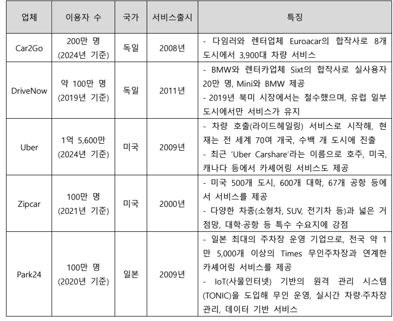
업체 이용자 수 국가 서비스출시 특징 200만 명 - 다임러와 렌터업체 Euroacar의 합작사로 8개
- BMW와 렌터카업체 Sixt의 합작사로 실사용자
약 100만 명 20만 명, Mini와 BMW 제공
DriveNow 독일 2011년 (2019년 기준) - 2019년 북미 시장에서는 철수했으며, 유럽 일부도시에서만 서비스가 유지
- 차량 호출(라이드헤일링) 서비스로 시작해, 현
1억 5,600만 재는 전 세계 70여 개국, 수백 개 도시에 진출
Uber 미국 2009년 (2024년 기준) - 최근 ‘Uber Carshare’라는 이름으로 호주, 미국, 캐나다 등에서 카셰어링 서비스도 제공
- 미국 500개 도시, 600개 대학, 67개 공항 등에
100만 명 서 서비스를 제공
Zipcar 미국 2000년 (2021년 기준) - 다양한 차종(소형차, SUV, 전기차 등)과 넓은 거점망, 대학·공항 등 특수 수요지에 강점
- 일본 최대의 주차장 운영 기업으로, 전국 약 1
만 5,000개 이상의 Times 무인주차장과 연계한 100만 명 카셰어링 서비스를 제공
Park24 일본 2009년 (2020년 기준) - IoT(사물인터넷) 기반의 원격 관리 시스템 (TONIC)을 도입해 무인 운영, 실시간 차량·주차장관리, 데이터 기반 서비스
글로벌 시장조사업체인 Statista의 조사에 의하면 전 세계 카셰어링 시장은 지속적인 성장세를 보이고 있다. 이후 2025년부터 2029년까지 연평균 성장률 (CAGR) 3.23%를 유지할 것으로 예측된다. 이러한 안정적인 성장 추세가 이어진다면, 2029년 카셰어링 시장의 규모는 157억 8천만 달러까지 확대될 전망이다.
더불어 글로벌 사용자 기반도 크게 확장되어 2029년까지 약 6,819만 명의 소비자가 카셰어링 서비스를 이용할 것으로 예상된다.
<그림 1> 글로벌 카셰어링 서비스 시장 전망(2017~2029)
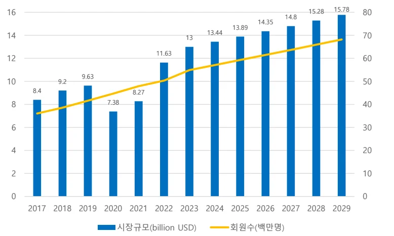
15.78
16 14.8
15.28 80
14.35 13.89 13.44
14 13 70 11.63
12 60 9.63
10 9.2 50
8.4 8.27
8 7.38 40
6 30
4 20
2 10
0 0 2017 2018 2019 2020 2021 2022 2023 2024 2025 2026 2027 2028 2029 시장규모(billion USD) 회원수(백만명)
자료: Statista, 본인 재구성
2.2.2 국내 카셰어링 현황
국내 최초의 차량공유서비스는 2007 년 서울 성미산 마을주민들이 조직한 '성미산마을 자동차 두레'로, 마을 내 자동차 사용 습관 변화를 목적으로 1 대의공동이용차량으로 시작되었다. 이어 2009 년에는 군포 YMCA 가 운영한 '녹색희망카셰어링'이 환경문제 해결과 시민들의 차량유지비 감소, 주차문제 해결 등을목적으로 출범했다. 그러나 이러한 시민공동체 주도형 서비스들은 규모의확장과 지속가능성 측면에서 한계를 보였다(김지예 외, 2020). 상업적 카셰어링서비스는 2010 년대 초반부터 본격화되었다. 국내 최초로 스마트폰애플리케이션 기반의 차량공유회사인 그린카가 2011 년 10 월 서울, 경기, 인천지역을 중심으로 사업을 시작했으며, 2011 년 12 월에는 쏘카가 제주도를중심으로 서비스를 개시했다. 이 외에도 씨티카(2013 년)와 한국전력공사 전기차공동이용서비스(2012 년) 등도 등장했으나 각각 2017 년과 2014 년에 서비스를중단했다.
한국 카셰어링 서비스의 급성장 배경에는 여러 요인이 복합적으로 작용했다.
경제적 측면에서는 경제성장률 둔화 및 실업률 상승으로 인한 신규차량구매위축이 중요한 역할을 했다. 사회문화적 측면에서는 소유보다 경험을 중시하고협력적 소비에서 가치를 찾는 새로운 소비의식의 확산이 카셰어링에 대한수요를 창출했다. 또한 정부의 정책적 지원도 산업 성장의 중요한 발판이되었다. 서울시는 공유촉진조례에 따라 다수의 차량공유업체를 공유기업으로선정하여 지원했으며, 서울시의 나눔카, 수원시의 나누미카, 인천시카셰어링서비스 등이 쏘카, 그린카 등의 민간업체를 위탁업체로 선정하여 2013 년을 전후로 적극적인 지원 정책을 펼쳤다(김점산 등, 2015). 이러한 공공- 민간 협력 모델은 카셰어링 서비스의 초기 인프라 구축과 대중화에 크게기여했다.
국내 카셰어링 시장은 여전히 쏘카와 그린카가 주도하는 과점적 구조가유지되고 있다. 최근 집계에 따르면 쏘카는 약 1,350 만 명의 누적 회원을확보하고 있으며, 시장 점유율은 80%에 달한다. 반면 그린카는 2023 년 기준회원 수와 시장 점유율이 지속적으로 하락해, 2023 년 12 월 기준 시장 점유율이약 22.4%까지 떨어졌다. 두 기업의 시장 점유율 합계는 90%를 상회하며, 나머지 4 개 업체가 소수의 시장 점유율을 나누는 구조이다. 경영 성과측면에서도 양사 간 격차가 확대되고 있다. 쏘카는 2024 년 매출 4,317 억원(카셰어링 부문 매출 3,711 억 원)을 기록하며 전년 대비 12.6% 성장했고, 2025 년에는 매출 5,280 억 원, 영업이익 232 억 원을 전망하고 있다. 쏘카는서비스 다각화 전략의 일환으로 부름·편도 등 편의 서비스를 확대하여 전체예약 건 중 25%가 해당 서비스로 이용되는 성과를 거두었다. 반면 그린카는 3 년 연속 적자를 기록하며 쏘카와의 격차가 더욱 벌어지고 있다. 업계전반적으로 카셰어링 이용자 수가 감소하는 추세이지만, 쏘카는 서비스다각화와 플랫폼 확장으로 성장세를 유지하고 있다.
<표 3> 국내 카셰어링 업체 현황 및 특징
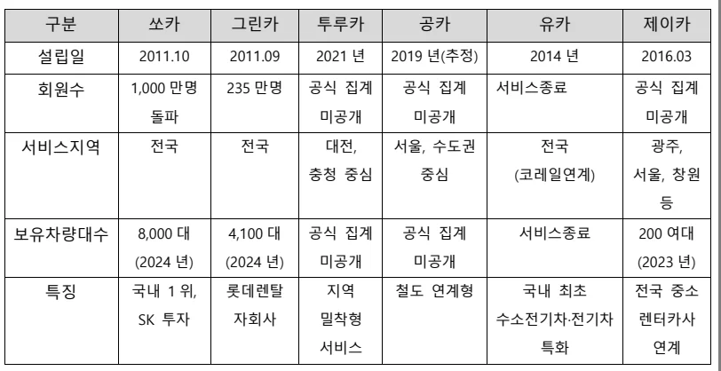
구분 쏘카 그린카 투루카 공카 유카 제이카
회원수 1,000 만명 235 만명 공식 집계 공식 집계 서비스종료 공식 집계돌파 미공개 미공개 미공개
서비스지역 전국 전국 대전, 서울, 수도권 전국 광주, 충청 중심 중심 (코레일연계) 서울, 창원등보유차량대수 8,000 대 4,100 대 공식 집계 공식 집계 서비스종료 200 여대 (2024 년) (2024 년) 미공개 미공개 (2023 년)
특징 국내 1 위, 롯데렌탈 지역 철도 연계형 국내 최초 전국 중소 SK 투자 자회사 밀착형 수소전기차·전기차 렌터카사서비스 특화 연계
이용자 인식 측면에서 카셰어링 서비스는 높은 인지도와 수용성을 보이고 있다. 2022년 기준 전국 운전면허 소지자 1,000명을 대상으로 한 설문조사에서 82.9%가 카셰어링 개념을 인지하고 있었으며, 39.1%가 실제 이용 경험이 있다고응답했다. 더욱 주목할 만한 점은 카셰어링 서비스 필요성에 대한 공감(85%)과향후 재이용 의향(67.4%)이 높게 나타났다는 것이다. 이는 카셰어링이 단순한일시적 서비스가 아닌, 지속가능한 모빌리티 대안으로 자리매김하고 있음을 보여준다.
국내 카셰어링 시장 규모는 2017년 468.35백만 달러에서 2018년 517.1백만 달러, 2019년 522.71백만 달러로 꾸준한 성장세를 보였다. 코로나19의 영향으로 2020년에는 389.53백만 달러로 급격히 감소했으나, 이후 2021년 427.97백만 달러로 회복세를 나타냈으며, 2022년부터는 564.37백만 달러로 크게 반등하며 팬데믹이전 수준을 넘어서는 성장을 달성하였다. 이러한 성장세는 더욱 가속화되어 2029년에는 726.99백만 달러에 달할 것으로 전망된다. 회원 수 역시 지속적으로증가하는 추세를 보이고 있으며, 2022년부터 가파른 상승세를 나타내고 있다.
<그림 2> 국내 카셰어링 서비스 시장 전망
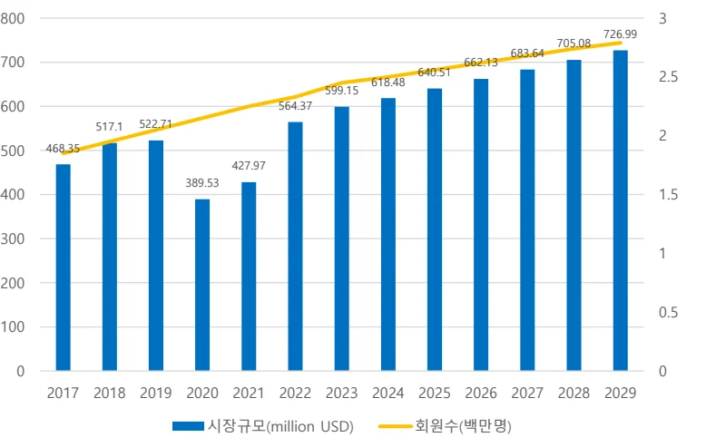
800 3 726.99 705.08 683.64
700 662.13 640.51
618.48 2.5
599.15
600 564.37
517.1 522.71
500 468.35 427.97 389.53
400 1.5 0.5
0 0 2017 2018 2019 2020 2021 2022 2023 2024 2025 2026 2027 2028 2029 시장규모(million USD) 회원수(백만명)
자료: Statista, 본인 재구성
이러한 시장 성장 아래 국내 카셰어링 산업은 단순 차량 대여를 넘어 종합모빌리티 플랫폼으로 진화하고 있다. 단기·편도·부름 등 다양한 상품 확대를 통해 이용자의 다양한 모빌리티 니즈를 충족시키고 있으며, 중고차 매각 및 주차플랫폼 등 연계 서비스를 강화하여 사업 영역을 확장하고 있다. 이러한 서비스다각화는 카셰어링 기업들이 단순한 차량 공유 서비스를 넘어 종합 모빌리티솔루션 제공자로 발전해 나가는 전략적 방향성을 보여준다.
2.3 파괴적 혁신(Disruptive Innovation)
파괴적 혁신(Disruptive Innovation)은 Christensen(2013)이 제시한 이론으로, 기존시장의 가치 기준을 근본적으로 변화시키는 혁신 패러다임이다. 이는 기존 제품이나 서비스의 성능을 점진적으로 개선하는 존속적 혁신(Sustaining Innovation)과명확히 구분된다. 존속적 혁신은 고객의 기대치가 가장 높고 까다로운 주류 고객을 대상으로 하며, 기존 가치 사슬 내에서 제품이나 서비스의 성능을 지속적으로 향상시키는 데 중점을 둔다. 반면, 파괴적 혁신은 처음에는 성능이 떨어지거나 단순하지만 가격, 편의성, 단순함과 같은 새로운 가치 제안으로 시장에 진입하여 점차 주류 시장까지 잠식하는 특성을 가진다.
파괴적 혁신 이론에서 중요한 개념 중 하나는 오버슈트(Overshoot)이다. 오버슈트는 기존 기업들이 제품이나 서비스의 성능을 고객의 실제 필요 이상으로개선하는 현상을 말한다. 기존 기업들은 지속적인 개선과 혁신을 통해 점점 더정교하고 복잡한 제품을 출시하지만, 많은 고객들은 이렇게 향상된 모든 기능을필요로 하지 않거나 실제로 활용하지 않는다. 이러한 제품 성능과 고객 요구 사이의 격차가 바로 파괴적 혁신이 진입할 수 있는 기회의 창을 만들어낸다.
<그림 3> 파괴적 혁신의 시장 진입과 성능 궤적
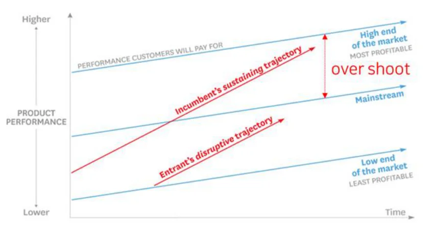
파괴적 혁신 기업들은 기존 시장의 오버슈트 현상을 전략적으로 활용한다. 이들은 기존 기업들이 주목하지 않는 저성능, 저비용 제품으로 시장에 진입하여점진적으로 주류 시장까지 확장해 나간다. 기존 기업들이 파괴적 혁신에 적절히대응하지 못하는 근본적 이유는 자원 배분 메커니즘에 있다. 기존 기업은 일반
적으로 규모가 크고 수익성이 높은 고객과 프로젝트에 우선적으로 자원을 할당한다. 따라서 초기에 규모가 작고 마진이 낮은 시장은 내부 자원 경쟁에서 우선순위를 받지 못하게 된다. 파괴적 혁신은 두 가지 주요 경로를 통해 발생한다.
<표 4> 점진적혁신과 파괴적혁신의 비교
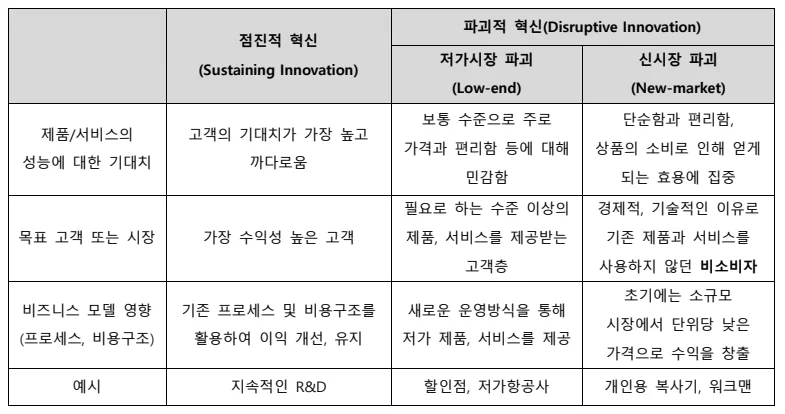
파괴적 혁신(Disruptive Innovation)
점진적 혁신저가시장 파괴 신시장 파괴 (Sustaining Innovation)
(Low-end) (New-market)
보통 수준으로 주로 단순함과 편리함,
제품/서비스의 고객의 기대치가 가장 높고가격과 편리함 등에 대해 상품의 소비로 인해 얻게
성능에 대한 기대치 까다로움민감함 되는 효용에 집중필요로 하는 수준 이상의 경제적, 기술적인 이유로
목표 고객 또는 시장 가장 수익성 높은 고객 제품, 서비스를 제공받는 기존 제품과 서비스를고객층 사용하지 않던 비소비자초기에는 소규모
비즈니스 모델 영향 기존 프로세스 및 비용구조를 새로운 운영방식을 통해시장에서 단위당 낮은
(프로세스, 비용구조) 활용하여 이익 개선, 유지 저가 제품, 서비스를 제공가격으로 수익을 창출
예시 지속적인 R&D 할인점, 저가항공사 개인용 복사기, 워크맨
로우엔드(Low-end) 파괴는 기존 시장의 가장 덜 수익성 있는 하위 고객층을대상으로 한다. 이 고객들은 기존 제품의 모든 고급 기능이 필요 없으며, 기본적인 기능만 갖추고 있지만 훨씬 저렴한 대안에 만족한다. 로우엔드 파괴 기업은 초기에 낮은 성능이지만 가격 경쟁력을 무기로 시장에 진입하여, 점차 성능을 개선하면서 중간층, 상위층 시장까지 확장해 나간다. 신시장(New-market) 파괴는 이전에 소비하지 않던 비소비자(non-consumers)를 새로운 고객으로 창출한다. 이 접근법은 기존 제품이나 서비스에 접근할 수 없었던 사람들에게 접근성, 편의성, 단순함 등 새로운 가치를 제공하며, 기존 시장과는 전혀 다른 새로운소비 맥락을 창출한다. 두 유형 모두 초기에는 기존 기업의 주 고객층과 직접적으로 경쟁하지 않기 때문에, 기존 기업들의 레이더에 잘 포착되지 않는 특성이있다. 그러나 시간이 지남에 따라 이들은 성능을 지속적으로 개선하고 비즈니스모델을 정교화하면서 점차 주류 시장으로 진입하게 된다. 결과적으로 파괴적 혁신 기업은 기존 시장 구조를 근본적으로 변화시키며, 한때 시장을 지배하던 기존 기업들은 이러한 변화에 적응하지 못하고 시장 지위를 상실하게 된다.
2.4 네트워크 효과 이론(Network Effect Theory)
네트워크 효과(Network Effect)란 제품이나 서비스의 가치가 사용자 수에 따라변화하는 경제적 현상으로, 디지털 플랫폼 경제의 핵심 원리로 작용한다. 이 개념은 AT&T의 이사 Theodore Vail이 전화 시스템 연구에서 처음 인식하였으나, 1974년 Jeffrey Rohlfs가 통신 서비스의 상호의존적 수요 이론으로 체계화했다.
이후 1985년 Michael Katz와 Carl Shapiro의 논문 "Network Externalities, Competition, and Compatibility"에서 '네트워크 외부성' 개념이 정립되며 이론적 토대가 완성되었다.
Katz와 Shapiro는 네트워크 외부성을 "제품이나 서비스를 사용하는 소비자 수가 늘어날수록, 기존 소비자들의 효용도 함께 증가하는 현상"으로 정의하고, 이를 기대(expectation), 조정(coordination), 호환성(compatibility)을 중심으로 설명했다. 네트워크 외부성은 크게 직접 네트워크 외부성과 간접 네트워크 외부성으로분류된다. 직접 네트워크 외부성은 동일 네트워크 내 사용자 수 증가가 각 사용자의 효용을 직접적으로 증가시키는 현상이다. 전화기나 메신저와 같은 통신 서비스가 대표적 사례로, 사용자가 많을수록 연결 가능한 상대가 증가하여 서비스가치가 높아진다. 간접 네트워크 외부성은 하드웨어(플랫폼) 사용자 증가가 소프트웨어(콘텐츠, 앱) 공급 확대로 이어져 소비자 효용이 증가하는 현상이다. 게임 콘솔과 게임 타이틀 관계처럼, 특정 플랫폼 보급이 확대될수록 해당 플랫폼용 콘텐츠 개발이 활성화된다.
Katz와 Shapiro는 네트워크 외부성을 "제품이나 서비스를 사용하는 소비자 수가 늘어날수록, 기존 소비자들의 효용도 함께 증가하는 현상"으로 정의하고, 이를 기대(expectation), 조정(coordination), 호환성(compatibility)을 중심으로 설명했다. 네트워크 외부성은 크게 직접 네트워크 외부성과 간접 네트워크 외부성으로분류된다. 직접 네트워크 외부성은 동일 네트워크 내 사용자 수 증가가 각 사용자의 효용을 직접적으로 증가시키는 현상이다. 전화기나 메신저와 같은 통신 서비스가 대표적 사례로, 사용자가 많을수록 연결 가능한 상대가 증가하여 서비스가치가 높아진다. 간접 네트워크 외부성은 하드웨어(플랫폼) 사용자 증가가 소프트웨어(콘텐츠, 앱) 공급 확대로 이어져 소비자 효용이 증가하는 현상이다. 게임 콘솔과 게임 타이틀 관계처럼, 특정 플랫폼 보급이 확대될수록 해당 플랫폼용 콘텐츠 개발이 활성화된다.
로버트 메칼프(Robert Metcalfe)가 제안한 메칼프의 법칙(Metcalfe’s Law)은 네트워크 가치가 사용자 수의 제곱에 비례한다는 이론으로, 네트워크 효과를 수량적으로 표현한 공식이다(V=n²). 이 법칙에 따르면 네트워크 사용자가 10배 증가할경우, 네트워크의 가치는 100배 증가한다. 메칼프의 법칙은 다음과 같은 특성을지닌다. 첫째, 기하급수적 가치 증가로, 초기에는 사용자 증가에 따른 가치 상승이 미미하지만, 임계점을 넘어서면 폭발적으로 성장한다. 둘째, 비용 대비 효율성으로, 네트워크 구축 비용은 선형적으로 증가하는 반면, 네트워크 가치는 기하급수적으로 증가한다.
<그림 4> 메칼프의 법칙(Metcalfe’s Law)
출처: reliantsproject
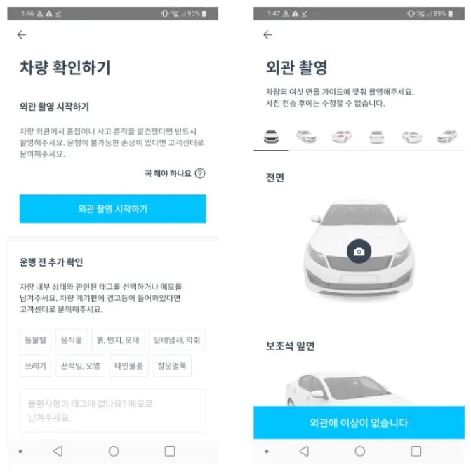
전통적 산업이 공급 측면에 집중하며 규모의 경제를 추구했다면, 네트워크 효과는 수요 측면에 초점을 맞추어 소비자 기반 확대가 서비스 가치 상승으로 이
어지고, 이것이 다시 추가적인 사용자 유입과 수익 창출로 순환되는 선순환 구조를 형성한다고 설명한다. 이러한 특성은 '눈덩이 효과(snow effect)’에 비유되며, 플랫폼에 참여자가 늘어날수록 플랫폼의 매력과 장점이 강화되어 더 많은 참여자를 유인하고, 이로 인해 플랫폼의 규모가 급격하게 확장되는 특성을 설명한다.
디지털 플랫폼 기업들의 핵심 전략은 초기 임계점(critical mass) 달성에 집중하는 것이며, 호환성과 표준화에 관한 의사결정이 장기적 시장 지위에 결정적 영향을 미친다. 네트워크 효과가 강한 플랫폼 비즈니스에서는 '잠금 효과(Lock-in Effects)'와 '전환 비용(Switching Costs)'이 중요한 경쟁 우위 요소로 작용한다. 잠금 효과란 사용자가 특정 제품이나 서비스를 지속적으로 사용하게 만드는 구조적 메커니즘을 의미하며, 이는 네트워크 효과가 강할수록 더 견고해진다. 전환비용은 사용자가 현재 사용 중인 제품이나 서비스에서 대안으로 전환할 때 발생하는 모든 비용을 포함한다. 여기에는 금전적 비용뿐만 아니라, 새로운 시스템에 대한 학습 시간, 데이터 이전, 심리적 부담 등 비금전적 비용도 포함된다.
네트워크 효과가 발생하는 플랫폼에서는 이러한 전환 비용이 일반적인 제품보다 더 높게 나타나는 경향이 있으며, 사용자가 많을수록 전환 비용이 증가하는특성을 보인다.
<그림 5> 매칼프의 법칙과 임계점(Critical Mass)
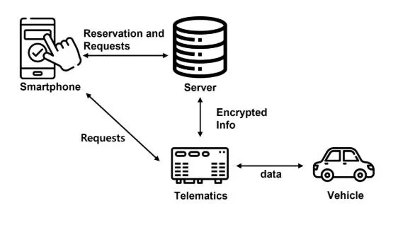
이러한 네트워크 효과, 잠금 효과, 전환 비용의 상호작용은 디지털 플랫폼 시장에서 '승자독식' 또는 '승자독식에 가까운' 구조를 형성하는 핵심 요인으로 작용한다.
제 3 장 사례분석
3.1 쏘카 기업 개요
쏘카는 2011 년 창업주 김지만에 의해 설립된 국내 선도적 카셰어링 서비스기업으로, '모든 사람이 자동차를 소유하지 않고도 필요할 때 편리하게 이용할수 있는 세상'이라는 비전을 바탕으로 제주도에서 100 대의 차량으로 서비스를시작했다. 쏘카의 탄생 배경에는 대중교통 인프라가 부족한 제주도의 지역적특성이 중요한 역할을 했으며, 김지만 대표는 '필요한 시간에만 잠시 차량을이용할 수 있는 서비스'의 필요성을 체감하며 사업 아이디어를 구체화했다.
<표 5> ㈜쏘카 기업 개요
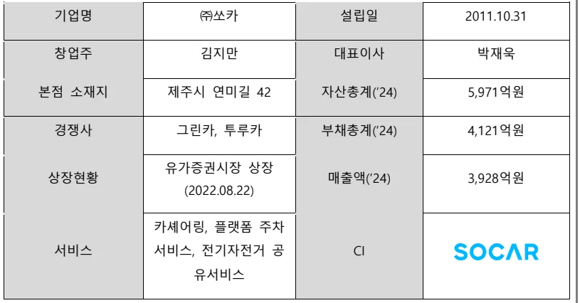
기업명 ㈜쏘카 설립일 2011.10.31 창업주 김지만 대표이사 박재욱
본점 소재지 제주시 연미길 42 자산총계(’24) 5,971억원경쟁사 그린카, 투루카 부채총계(‘24) 4,121억원유가증권시장 상장
상장현황 매출액(‘24) 3,928억원 (2022.08.22)
카셰어링, 플랫폼 주차서비스 서비스, 전기자전거 공 CI 유서비스
창업 초기부터 IoT 기술과 모바일 플랫폼을 핵심 경쟁력으로 삼았으며, 2012 년 2 월 스마트폰 애플리케이션을 출시하면서 본격적인 카셰어링 서비스를제공하기 시작했다. 쏘카는 무인 대여 시스템과 시간 단위 이용이라는 두 가지핵심 가치를 통해 기존 렌터카 서비스와 명확한 차별화를 이루었다. 특히 10 분단위 예약제, 비대면 차량 이용, 24 시간 상시 운영 등 사용자 중심의 혁신적인서비스 모델을 구축함으로써, 단기 이동과 즉흥적 차량 이용에 대한 새로운수요를 창출했다.
<그림 6> 쏘카의 카셰어링 서비스(어플화면)
출처: 쏘카 기업소개서
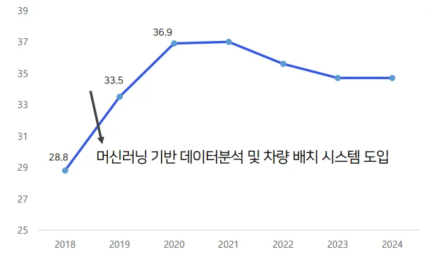
김지예, 한인구(2020)의 연구에 따르면 쏘카는 창업 초기인 2011년 11월 현대자동차와의 MOU를 통해 소나타 차량을 확보하고, 2012년 3월부터 제주지역에서 본격적인 차량공유서비스를 시작했다. 당시 차량수급의 불균형에서 시장 가능성을 파악하고 국내 차량공유서비스 태동기에 빠르게 진입한 것이다. 2015년에는 서울시 나눔카 사업자로 선정되어 공영주차장 사용권을 확보함으로써 서비스 지역을 획기적으로 확대했고, 부산, 경기, 인천, 경남으로 서비스를 확장하며 국내 최초로 차량공유 편도서비스를 출시했고 그 결과 매출이 2014년 146 억원에서 2015년 487억원으로 230% 성장했다. 이 시기에 서비스를 전국 단위로 확대하고 20대 소비자를 타겟으로 한 공격적인 마케팅을 전개했다. 또한 SK 와 베인캐피탈로부터 650억원 규모의 투자를 유치하여 사업 확장 자금을 확보했으며, 특히 SK와의 전략적 파트너십 구축이 성공의 중요한 요인이 되었다.
쏘카의 성장과정은 크게 창업 및 서비스 출시(2011-2012), 서비스 확대 및 성
장(2013-2017), M&A 및 사업다각화(2018-2019), MaaS 생태계 확장(2020-현재) 의 네 단계로 구분할 수 있다.
창업 및 서비스 출시(2011-2012) 단계에서는 2011 년 10 월 설립과 함께소풍벤처스로부터 시드 투자를 유치했다. 2012 년 3 월 제주도에서 카셰어링서비스를 본격적으로 시작했으며, 스마트폰 어플리케이션을 출시하며 기술 기반서비스의 기틀을 마련했다. 서비스 확대 및 성장(2013-2017) 단계에서는 수도권 6 대 광역시 진출을 통해 서비스 지역을 확장했으며, 서울시 나눔카 사업자로선정되어 공영주차장 활용권을 확보함으로써 인프라를 크게 확대했다. 이시기에 14 년 국내 카셰어링 1 위로 등극하며 업계 선도 기업으로 자리매김했고, 전국 54 개 도시로 서비스를 확대했다. 또한 차량 딜리버리 서비스를 ‘부름’을출시하며 서비스 다각화의 첫 걸음을 내디뎠다. M&A 및 사업다각화(2018-2019)
단계에서는 VCNC 인수를 통해 라이드헤일링 서비스인 타다 서비스를 출시하며모빌리티 서비스 영역을 확장했다. 또한 사업다각화를 위해 자율주행 기술 기업라이드플럭스에 투자하였고, 차량관리 전문기업인 차케어, 실내 정밀 측위 기술기업인 폴라리언스를 인수하는 등 미래 모빌리티 기술 확보에 나섰다. 법인전용 카셰어링 서비스 ‘쏘카비즈니스’ 출시, 월단위 카셰어링 서비스 ‘쏘카플랜’ 출시, 국내 최초 차량 구독 멤버십 ‘쏘카패스’ 출시 등 사업 다각화를 적극추진하며 기존 초단기 카셰어링 시장을 벗어나 기존 렌터카 기업들의 영역인중, 장기, 법인렌트카 서비스 영역에 진출했다. 이 시기 기업가치는 2018 년 5,700 억 원으로 평가되며 스타트업을 넘어 중견기업으로서의 위상을 갖추기시작했다. MaaS 생태계 확장(2020-현재) 단계에서는 국내 모빌리티 기업 최초유니콘 등극(2020)하며 기업 가치 1 조 원을 달성했고, 2022 년 코스피시장에상장하였다. 쏘카존 편도 서비스를 출시하고, 간편결제서비스 '쏘카페이', 숙박연계서비스 ‘쏘카스테이’ 등을 출시하며 서비스 영역을 확장했다. 최근쏘카는 단순 카셰어링을 넘어 종합 모빌리티 플랫폼으로 사업 영역을 확장하고있다. 편도 서비스, 차량 호출 서비스, 중고차 거래 등 다양한 사업 모델을도입하며 모빌리티 시장에서의 영향력을 더욱 확대하고 있다.
3.2 쏘카의 카셰어링 서비스
쏘카의 카셰어링 서비스는 기존 렌터카 산업의 제약요소였던 시간과 공간적제약, 단기 이동 수요 미충족 문제를 디지털 기술을 활용하여 혁신적으로 해결한 모빌리티 서비스이다. 전통적인 렌터카 서비스가 일 단위 대여, 대면 계약절차, 지정된 지점에서의 차량 수령 및 반납을 요구하는 반면, 쏘카는 시간 단위 대여, 무인 비대면 서비스, 도심 곳곳에 분산된 쏘카존을 통해 사용자 편의성과 접근성을 극대화했다. 이러한 서비스 혁신의 기술적 기반은 IoT 기술과 데이터 기반 운영 시스템으로, 이를 통해 차량의 실시간 모니터링과 원격 제어가가능해졌다. 쏘카의 차량에는 원격으로 예약, 운행, 반납이 가능하도록 일반 차량과 차별화된 다양한 IoT 장치들이 설치되어 있다. 관제 장치, 텔레매틱스, 하이패스 등은 외관상으로는 일반 제품과 유사해 보이지만, 쏘카만의 고유한 기술이 탑재되어 카셰어링 서비스에 최적화된 기능을 제공한다.
3.2.1 IoT 기반 차량 원격 제어
쏘카는 IoT 기술을 기반으로 차량을 원격으로 제어하는 시스템을 개발하고운영한다. 차량 통신 기술과 블루투스 기술을 활용해 스마트폰으로 간편하게 차문을 여닫거나, 주유량과 전기배터리 충전량을 실시간으로 확인할 수 있다. 이시스템의 중추적 역할을 하는 것이 '관제장치(Telematics Device)'로, 쏘카의 관제장치는 일반 차량을 카셰어링 서비스에 적합한 형태로 전환하는 핵심 요소이다.
쏘카의 관제 장치는 크게 세 가지 주요 기능을 수행한다. 첫째, 차량 데이터수집 기능이다. 차량의 위치, 작동 상태, 주유량, 문 잠금 상태 등 다양한 데이터를 실시간으로 수집한다. 이는 비대면 카셰어링 서비스의 기반이 되는 핵심기능이다. 쏘카가 운영하는 17,000대 이상의 다양한 차종을 효율적으로 관리하기 위해 이러한 데이터 수집은 필수적이다. 수집된 데이터는 ISMS-P 인증에 따른 엄격한 보안 체계 하에 관리되며, 권한을 가진 일부 직원들만 접근이 가능하다. 둘째, 차량 제어 기능이다. 관제 장치는 원격으로 차량의 문을 잠그고 여는기능을 수행한다. 일반 차량에서는 스마트키를 통해 이루어지는 작업이지만, 쏘카는 스마트폰 앱을 통해 동일한 기능을 구현한다. 스마트키 없이 스마트폰 앱을 통해 차 문을 열고 잠글 수 있으며 비상등, 경적 울림 대에도 사용하고, 원거리에서도 차량 제어가 가능하다. 이러한 원격 제어 기능은 기존 렌터카의 대면 계약과 키 수령 과정을 완전히 생략할 수 있게 한 혁신적 요소이다. 셋째, 통신기술 연계이다. 다양한 통신 방법을 통한 데이터 교환이 이루어진다. 관제장치는 LTE/3G 통신을 기본으로 쏘카 서버와 데이터를 교환하지만, 통신 음영지역에서의 서비스를 위해 BLE 5.0 블루투스 통신 기능도 갖추고 있다. 이를 통해 지하주차장, 산지, 바다지역 등 3G/LTE 통신이 매우 약한 지역에서도 문제없이 차량을 제어할 수 있다. 또한 근거리에서는 블루투스를 통해 더 빠른 속도로차량을 제어할 수 있다.
<그림 7> 쏘카의 관제 장치(Telematics Device)
출처: SOCAR Tech blog
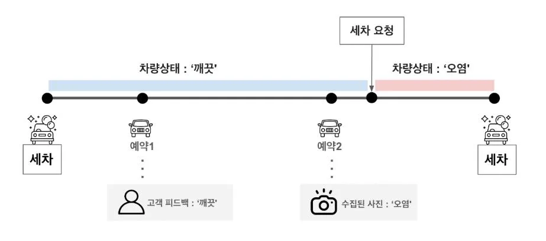
이처럼 쏘카의 관제 장치에는 극한의 환경 조건을 견디기 위한 설계부터 전자기 간섭 방지까지, 개발, 제조, 납품, 장착, AS 전반에 걸친 다양한 노하우와기술이 집약되어 있다. 이러한 기술적 완성도를 바탕으로 쏘카가 자체 개발한관제 장치는 2020년 첫 도입 이후 10,000대 이상의 차량에 장착되어 약 6천만시간 동안 57만 명의 고객들의 176만 번의 차량 운행을 안정적으로 지원했다.
이 장치들은 2억 km 주행 거리 동안 3천만 번의 제어를 성공적으로 수행하고 6 억 개의 데이터셋을 수집하는 놀라운 성과를 기록했다. 이러한 IoT 기반 차량원격 제어 시스템의 안정성과 성능은 모든 환경 조건에서도 신뢰할 수 있는 비대면 카셰어링 서비스를 가능하게 하는 핵심 기술적 경쟁력으로, 쏘카가 국내카셰어링 시장에서 선도적 위치를 확보하는 데 결정적인 역할을 했다.
3.2.2 데이터 기반 수요 예측
쏘카의 또 다른 핵심 역량은 방대한 데이터를 수집, 분석, 활용하는 데이터기반 운영 시스템이다. 쏘카는 차량 데이터(위치, 속도, 주행거리, 연료 상태), 사용자 데이터(이용 패턴, 선호 차종, 이용 시간대), 환경 데이터(기상 조건, 교통 상황) 등을 실시간으로 수집·분석하여 운영 전반에 활용하고 있다.
자체적으로 차량 관제·관리 시스템(FMS, Fleet Management System)을 구축해 2 만여 대의 차량을 실시간으로 관리하며, 이 시스템은 위치, 상태, 운전습관, 연료, 온도 등 다양한 데이터를 수집·분석하여 운영 효율을 극대화한다.
수익 극대화를 위해서는 1 대당 차량 가동률을 높여 수익을 향상시키거나비용을 최소화하는 것이 중요하다. 쏘카는 데이터 기반 운영 시스템을 통해이를 효과적으로 달성하고 있다. 차량 운영 최적화를 위해 지역별, 시간대별수요 예측 모델을 구축하여 이용률이 낮은 지역의 차량을 회수하고 수요가높은 지역으로 재배치함으로써 차량 유휴 시간을 감소시키고 있다. AI 와빅데이터를 활용한 수요 예측 및 차량 배치 최적화로, 차량을 수요가 높은지역·시간대에 사전 배치해 유휴 시간을 줄이고 가동률을 높였다.
또한, 쏘카는 모두 예약제로 운영되기 때문에, 예약들을 한곳으로 모아연결되도록 하는 것이 운영의 핵심 중 하나이다. 이전에는 지역 매니저들이각기 담당하는 차량들의 예약을 이리저리 재배열하여 효율성을 끌어올렸으나, 현재는 수리적 최적화 방식에 기반한 자동화 오퍼레이션을 통해 수작업으로진행되던 업무를 완전히 자동화하고 있다. 예약을 차량의 빈 시간대에 차곡차곡정리하는 ‘예약 테트리스’를 활용해 각 차량의 유휴 시간을 최소화하고가동률을 높임으로써 동일한 차량 자산으로 더 많은 서비스를 제공할 수 있게된다.
<그림 8> 쏘카 차량 예약이 최적화된 모습
출처: Socar tech blog
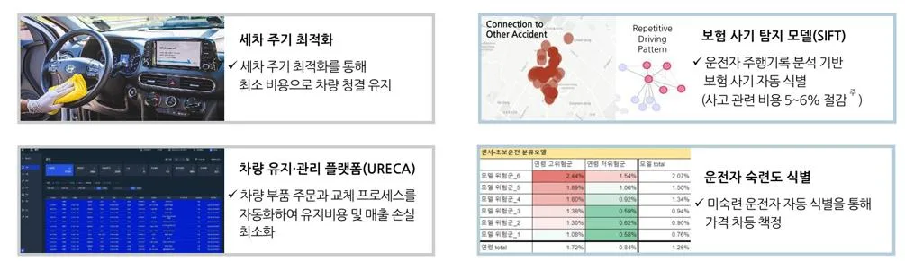
쏘카는 자원 활용 효율성을 극대화하기 위한 다양한 전략을 구사하고 있다.
이용률과 지역 경쟁 상황 등을 고려한 동적 가격 조정(dynamic pricing)을 통해수요-공급 상황에 따라 실시간 가격을 최대 30%까지 조정하고, 예약 시간, 장소등 실시간 수요를 반영한 탄력 가격 모델을 활용한다. 이와 함께 공헌이익기여가 높은 잠재 고객을 선별적으로 선발해 맞춤형 쿠폰을 제공하는 정교한마케팅 전략도 실행하고 있다. 가동률 극대화를 위해서는 고객이 원하는지점에서 대여가 가능한 '부름' 서비스와 원하는 곳에서 반납이 가능한 '쏘카존편도' 서비스를 개시하여 추가 수요를 확보하고, 파편화된 예약 슬롯을자동으로 재배치하는 시스템을 통해 차량 활용 효율성을 높이고 있다. AI 기반수요 예측과 이러한 다양한 최적화 전략의 결과로 2014 년에는 직원 1 명이 50 대의 차량을 관리했으나, 2023 년에는 1,000 대를 관리할 수 있을 정도로 운영효율성이 비약적으로 향상되었으며 이러한 머신러닝 기반 데이터 분석과 차량배치 시스템을 통해 차량 1 대당 평균 가동률을 2018 년 28.8%에서 2020 년 36.9%로 크게 향상시켰다.
<그림 9> 차량 1 대당 평균 가동률 변화(단위: %)
자료: 쏘카 사업보고서
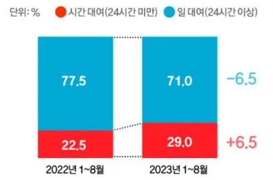
3.2.3 AI 기반 차량 관리
쏘카는 약 2 만 대의 차량을 효율적으로 관리하기 위해 AI 기술을 적극적으로도입하여 차량 관리 체계를 혁신하였다. 이러한 AI 기반 차량관리 시스템은크게 차량 파손 탐지 시스템, 세차 인증 자동화 시스템, 그리고 차량 부품 주문및 교체 자동화 시스템 등이 해당한다.
쏘카는 AI 비전 기술을 활용하여 차량 파손을 자동으로 탐지하는 시스템을개발하였다. 이 시스템은 고객이 앱에 업로드한 사진을 분석해 차량 손상여부를 자동으로 진단하고, 이상이 있을 경우 담당자에게 자동 알림을 보내는 '차량 파손 탐지 시스템(엑시다)'으로 구현되었다. 차량 파손 탐지 시스템의도입으로 쏘카는 차량 이미지 검수에 투입되던 인력과 시간 비용을 크게절감하였고, 차량별 파손 히스토리를 시간 순으로 관리함으로써 파손 발생시점과 책임자를 정확히 추적할 수 있는 체계를 구축하였다.
쏘카는 AI 기술을 활용하여 차량 세차 주기를 최적화하는 시스템을 구축했다.
이 시스템은 고객이 차량 이용 후 앱에 업로드하는 차량 사진을 딥러닝 모델이
자동으로 분석하여 오염 상태를 판별한다. AI 는 단순히 오염 여부만 감지하는것이 아니라, 오염의 심도(confidence 값)까지 정밀하게 평가하여 세차 필요여부를 결정한다. 이러한 기술적 접근은 과거 직원이 직접 세차 필요 차량을선정하던 방식에서 벗어나, 세차 요청 과정을 완전히 자동화하는 혁신을가져왔다. 쏘카는 이 프로세스를 '세차 오퍼레이션'이라 명명하고, 세차 요청과그 결과를 대시보드를 통해 실시간으로 모니터링하고 있다. 더 나아가 쏘카는단순한 오염 상태 판단을 넘어, 기상청 API 등을 통해 수집한 강수 예보 등날씨 데이터를 세차 의사결정 과정에 통합했다. 예를 들어 비가 올 것으로예보된 경우에는 세차 일정을 조정하거나 미룸으로써 불필요한 비용을절감하는 지능형 최적화를 실현하고 있다. 이러한 AI 기반 세차 주기 최적화시스템은 쏘카가 대규모 차량을 효율적으로 관리하면서도 서비스 품질과 고객만족도를 유지하는 데 중요한 역할을 하고 있다.
<그림 10> 쏘카의 세차 오퍼레이션 흐름
출처: SOCAR Tech Bloh
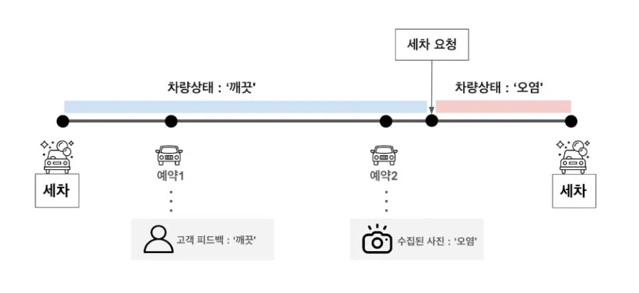
쏘카는 차량 관리의 또 다른 중요한 측면인 부품 교체와 정비 과정도 AI 와데이터 기술을 활용하여 자동화하였다. 쏘카 자회사 차케어가 개발한 차량 관리플랫폼 '유레카(URECA)'는 차량 부품 주문 및 교체 프로세스를 표준화하고자동화하는 시스템이다. 이 시스템은 각 차량의 주행 거리, 사용 빈도, 부품별교체 주기 등 다양한 데이터를 분석하여 최적의 부품 교체 시점을 예측하고,
자동으로 발주 프로세스를 진행한다. AI 알고리즘은 차량 유형, 운행 환경, 사용패턴 등에 따른 부품별 최적 교체 주기를 학습하여, 각 차량에 맞춤형 정비일정을 제안한다. 이를 통해 불필요한 조기 교체는 피하면서도 고장으로 인한서비스 중단을 예방할 수 있게 되었다. 또한 정비소와의 실시간 연계를 통해정비 예약부터 완료까지의 전 과정을 디지털화하고, 정비 내역과 결과를자동으로 기록하여 차량별 정비 이력을 체계적으로 관리한다.
<그림 11> AI-데이터 기반 차량, 운전자 모니터링 시스템
출처: 쏘카 사업보고서
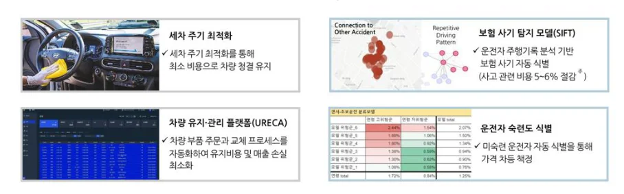
이러한 차량 부품 주문 및 교체 자동화 시스템의 도입 결과, AI 도입 이후차량 세차비 14%, 유지비 4%, 정검비 11% 등 실질적 비용 절감 효과가나타났으며 차량 관리 효율이 극대화되면서 무인 서비스 품질도 크게향상되었다. 이는 쏘카가 대규모 차량을 효율적으로 관리하며 지속가능한비즈니스 모델을 구축하는 데 핵심적인 역할을 하고 있다.
3.3 쏘카의 경영 성과
쏘카는 기존 렌터카 비사용자층을 새로운 소비자로 끌어들이며 자동차이용의 혁신적 패러다임을 구축했다. 전통적인 렌터카 시장이 장거리/장기 대여중심이었던 것과 달리, 단거리/초단기 대여라는 새로운 시장 영역을 개척하여업계 전반에 디지털 혁신의 물결을 일으켰다. 이러한 변화는 단기렌터카 시장통계에서도 명확히 드러나는데, 24 시간 이내 단기 대여 비중이 2022 년 1-8 월 22.5%에서 2023 년 동기간 29.0%로 6.5%p 상승한 반면, 장기 대여(24 시간 이상) 비중은 77.5%에서 71.0%로 감소했다.
<그림 12> 단기렌터카 시간 대여 비중 변화
자료: 롯데렌탈
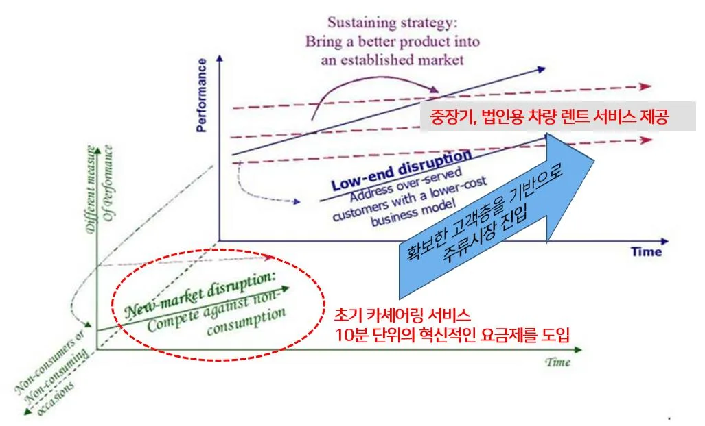
쏘카의 성공에 주요 렌터카 기업들도 디지털 전환에 박차를 가했다.
롯데렌탈은 그린카를 인수하고 IoT 기술을 접목해 2020 년부터 차량 관리서비스를 전면 비대면화했으며 AJ 렌터카는 2018 년 링커블을 인수하여카셰어링 시장에 진출했으나 2020 년에 철수했다. 현대캐피탈은 장기렌터카서비스에 NFC 카드와 앱 기반 디지털 키 시스템을 도입했고, SK 렌터카는다이렉트 상품의 계약부터 차량 수령까지 전 과정을 비대면으로 전환하는 등산업 전반에 걸쳐 디지털 혁신이 가속화되고 있다.
<표 6> 기존 렌터카 기업들의 디지털 전환(DX) 현황
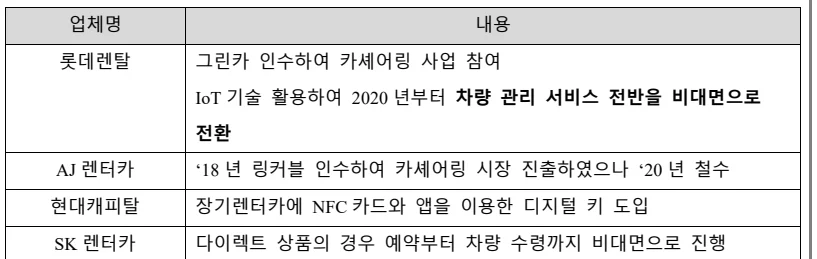
업체명 내용
롯데렌탈 그린카 인수하여 카셰어링 사업 참여 IoT 기술 활용하여 2020 년부터 차량 관리 서비스 전반을 비대면으로전환
AJ 렌터카 ‘18 년 링커블 인수하여 카셰어링 시장 진출하였으나 ‘20 년 철수
현대캐피탈 장기렌터카에 NFC 카드와 앱을 이용한 디지털 키 도입
SK 렌터카 다이렉트 상품의 경우 예약부터 차량 수령까지 비대면으로 진행
쏘카는 경쟁기업인 그린카보다 시장에 후발주자로 진입했음에도 불구하고, 2014 년부터 카셰어링 산업의 선두주자로 급부상하여 현재까지 확고한 업계 1 위를 유지하고 있다. IoT 기반 제어장치를 활용한 혁신적 서비스 모델로
그린카, 투루카 등 경쟁사들과의 차별화에 성공했으며, 초기 소규모 차량운영에서 시작해 20204 년 기준 2 만대 이상의 차량을 운영하는 국내 최대카셰어링 기업으로 도약했다. 시장점유율 측면에서의 성과는 더욱 두드러진다.
2023 년 3 분기 기준 쏘카는 국내 카셰어링 시장에서 83.27%라는 압도적인점유율을 기록하며, 주요 경쟁사인 그린카(16.73%)를 큰 격차로 따돌리는 데성공했다.
<표 7> 국내 카셰어링 시장 점유율
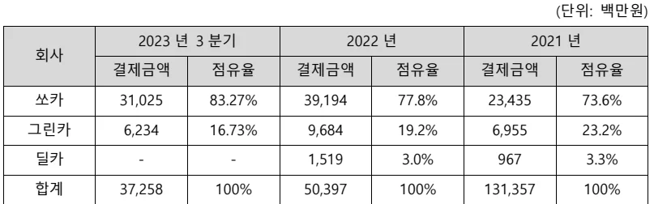
(단위: 백만원)
2023 년 3 분기 2022 년 2021 년
회사결제금액 점유율 결제금액 점유율 결제금액 점유율
쏘카 31,025 83.27% 39,194 77.8% 23,435 73.6%
그린카 6,234 16.73% 9,684 19.2% 6,955 23.2%
딜카 - - 1,519 3.0% 967 3.3%
합계 37,258 100% 50,397 100% 131,357 100%
자료: 현대카드
쏘카는 2011 년 설립 및 2012 년 서비스 출시 이후 약 10 년 만에 비약적인성장을 이룩했다. 매출액은 2014 년 15 억 원에서 2023 년 393 억 원으로 약 26 배 증가했으며, 이는 연평균 성장률(CAGR) 43%에 달하는 수치이다. 2014 년단 15 만 명에 불과했던 회원수가 2023 년에는 1,100 만 명으로 73 배 이상폭발적으로 증가했으며, 이는 대한민국 운전면허 소지자의 상당 부분을회원으로 확보했음을 의미한다. 특히 2019 년 코로나 19 로 인한 일시적 하락이후 2020 년부터 다시 가파른 상승곡선을 그리며 2021 년 750 만 명, 2022 년 1,000 만 명을 연이어 돌파한 점은 주목할 만하다. 차량대수 역시 꾸준한증가세를 보이며 서비스 품질과 접근성을 향상시켰다. 초기 소규모 차량으로시작했으나, 현재는 약 2 만 4 천대의 차량을 보유하고 있으며, 포르쉐, BMW, 벤츠와 같은 고급 외제차를 보유 차량 목록에 추가하며 제공하는 차종의다양성을 확대하고 있다.
<그림 13> 쏘카 매출액, 회원수, 보유 차량대수 변화 그래프(2014~2024)
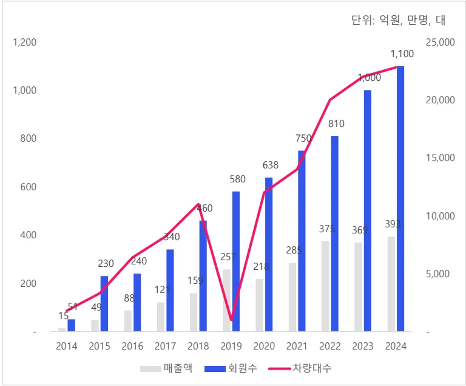
단위: 억원, 만명, 대
1,200 25,000 1,100 1,000
1,000 20,000
800 750 15,000 10,000 375 393
400 340 240 257 230 218 5,000
200 159 51 49
- -
2014 2015 2016 2017 2018 2019 2020 2021 2022 2023 2024 매출액 회원수 차량대수
자료: DART 전자공시시스템, 쏘카 언론 발표 종합
쏘카는 초기 단순 카셰어링 서비스에서 벗어나 종합 모빌리티 플랫폼으로진화하고 있다. 사업 다각화 전략의 일환으로, 쏘카는 자체 개발한 FMS(Fleet Management System)의 외부 판매를 통한 B2B 시장 진출을 계획하고 있다.
대규모 차량 관리를 위해 개발한 내부 시스템을 새로운 수익원으로 전환하는이 전략은 2023 년 4 분기부터 여러 협의사와의 PoC(Proof of Concept) 검증을거쳐 상용화가 추진되고 있다. 또한 쏘카는 서비스 이용 과정에서 축적된방대한 데이터를 활용한 부가가치 창출에도 주력하고 있다. 운전 데이터, 결제정보, 보험 자격 정보 등을 기반으로 신용평가모델을 개발하고, 이를 자동차보험 및 금융 상품과 연계하는 혁신적인 서비스를 구축했다. 더불어 전기자동차일레클, 모두의 주차장과 같은 연계 서비스 제공을 통해 모빌리티 생태계의확장성을 더욱 강화하고 있다.
제 4 장 연구결과 및 한계점
4.1 연구결과
쏘카는 IoT 기술과 차량원격제어시스템을 기반으로 한 비대면 카셰어링서비스를 통해 기존 렌터카 시장이 충족시키지 못하던 단기 이동 수요를발굴하며 신시장 파괴형 혁신(New-Market Disruptive Innovation)을 성공적으로구현했다.
쏘카의 시간 단위 대여, 무인 대여 시스템, 스마트폰 앱 기반 사용자 경험은기존 렌터카 서비스의 일 단위 대여, 대면 계약, 제한된 대여/반납 장소라는한계를 극복한 혁신적 요소였다. 이를 통해 쏘카는 기존에 렌터카를 이용하지않던 비소비자층(non-consumers)을 새로운 고객으로 전환시켰으며, 점차서비스를 개선하여 기존 렌터카 시장까지 침투하는 파괴적 혁신의 경로를따랐다.
쏘카는 10 분 단위의 혁신적인 모델을 통해 초기 단계에서는 기존 렌터카와는상이한 저렴한 가격과 접근성을 통해 새로운 소비 패턴을 만들어냈으며 이후점차 서비스 품질을 향상시키고 차량 라인업을 다양화하며 단기카셰어링서비스 매출 외에도 법인 차량 대여, 기존 렌터카 기업이 제공하는 것과 동일한일, 월 단위 차량 대여 시장에도 성공적으로 진출하였으며 매출을 꾸준히늘려가고 있다. 초단기 차량 대여의 경우 고객의 수요가 고정되어 있지 않아시간, 장소, 지역별로 큰 차이가 존재한다. 그러나 기존 렌터카 기업들은 이러한상황에 즉각 대응할 수 있는 데이터 관리 시스템과 대응조직이 부재하여 결국비대면 기업인 쏘카에게 시장 주도권을 내어줄 수밖에 없었다.
즉, 쏘카는 디지털 기술을 활용해 기존 렌터카 산업이 보유한 장벽을뛰어넘어 신규 고객층을 확보했고, 서비스 편의성과 접근성을 높여 전통적렌터카 시장의 고객들도 점차 쏘카로 이동하게 만드는 신시장 파괴형 혁신을이루었다.
<그림 14> 쏘카의 신시장 파괴적 혁신 궤적
자료: Christensen 파괴적 혁신, 본인 재가공
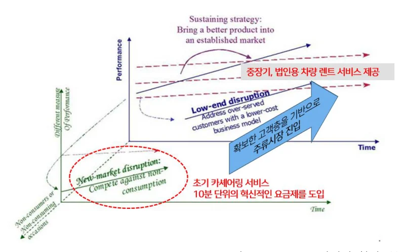
쏘카와 그린카는 사업 초기 서울시 나눔카 선정으로 인해 동반 성장의기회를 얻었으나, 이후 두 기업의 전략적 방향성은 크게 달라졌다. 그린카는롯데렌탈의 자회사로 편입되며 IoT 기술의 고도화나 데이터를 활용한 서비스개선보다는 롯데렌탈이 이미 확보한 법인 기업 위주의 서비스에 집중했다. 반면쏘카는 지속적인 서비스 고도화와 기술 혁신에 투자하며 개인 소비자 중심의사용자 경험을 개선하는 데 주력했다. 이러한 전략적 차이는 두 기업의 성장경로와 시장 점유율에 결정적인 영향을 미쳤다.
쏘카는 자체 개발한 IoT 기반 차량원격제어시스템과 데이터 기반운영시스템을 통해 차별화된 경쟁력을 확보했다. 이는 단순한 기술적 우위를넘어서 강력한 네트워크 효과를 창출하는 토대가 되었다. 제시된 그래프에서 볼수 있듯이, 쏘카의 회원수는 2014 년부터 2021 년까지 51 명에서 730 명으로폭발적으로 증가한 반면, 그린카는 같은 기간 51 명에서 390 명으로 상대적으로완만한 성장을 보였다. 이러한 격차는 시간이 갈수록 더욱 확대되어 2023 년
3 분기 기준으로 쏘카는 카셰어링 시장에서 83.27%라는 압도적인 점유율을차지하게 되었다.
<그림 15> 쏘카, 그린카의 회원수 증가 추세
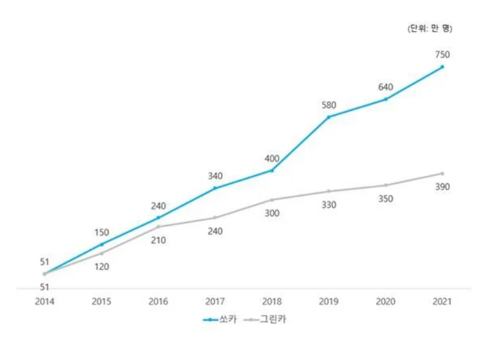
위 그림에서 볼 수 있듯이, 쏘카의 회원수는 2014 년부터 2021 년까지 51 명에서 730 명으로 폭발적으로 증가한 반면, 그린카는 같은 기간 51 명에서 390 명으로 상대적으로 완만한 성장을 보였다. 이러한 격차는 시간이 갈수록더욱 확대되어 2023 년 3 분기 기준으로 쏘카는 카셰어링 시장에서 83.27%라는압도적인 점유율을 차지하게 되었다.
쏘카의 성공은 네트워크 효과를 활용한 선순환 구조 구축에 있다. 더 많은사용자가 유입될수록 더 많은 데이터가 축적되고, 이를 통해 알고리즘의고도화가 이루어져 결과적으로 사용자에게 더 높은 가치를 제공하는 선순환구조가 형성되었다. 사용자로부터 수집된 방대한 이용 데이터를 분석해 차량배치 최적화, 수요 예측, 가격 정책 등에 활용함으로써 서비스 품질을지속적으로 개선했고, 이는 다시 사용자 경험 향상과 추가 사용자 유입으로이어지는 양의 피드백 루프를 만들어냈다.
<그림 16> 쏘카의 네트워크 효과 형성 과정
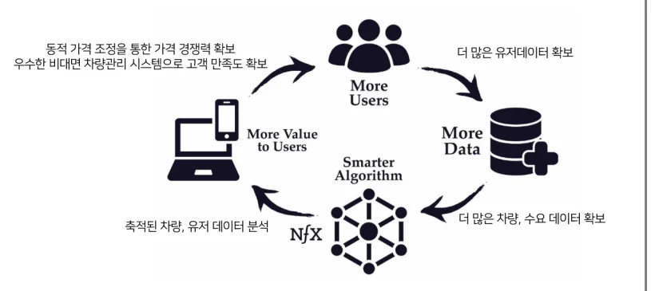
결론적으로, 쏘카는 국내 카셰어링 시장에서 후발주자였음에도 불구하고 IoT 기술과 데이터 기반의 차별화 전략, 그리고 이를 통해 형성된 강력한 네트워크효과를 바탕으로 시장의 패러다임을 변화시키고 1 위 기업으로 자리매김했다.
4.2 시사점
쏘카는 기존 렌터카 시장이 주로 장거리 여행이나 장기간 비즈니스 출장등을 위한 일 단위 이상의 대여 서비스에 초점을 맞추고 있었던 반면, 도심 내단거리 이동이나 몇 시간 단위의 일시적인 차량 필요성과 같은 초단기 이동수요에 주목했다. 이는 이전에는 제대로 포착되지 않았거나, 기존 업체들이수익성이 낮다고 간주하여 충족시키지 않던 소비자 니즈였다. 쏘카는 이러한미충족 니즈를 정확히 포착하고, 10 분 단위 요금제와 무인 대여 시스템을결합한 혁신적인 서비스 모델을 통해 이를 효과적으로 충족시켰다. 혁신을추구하는 기업들에게 기존 시장의 지배적 플레이어들과 정면으로경쟁하기보다는, 그들이 간과하고 있는 미충족 니즈와 블루오션을 발굴하여새로운 시장을 창출하는 전략이 효과적일 수 있음을 시사한다.
쏘카는 전통적인 렌터카 산업의 구조를 면밀히 분석하고, 가장 큰 마찰과비효율이 발생하는 '차량 대여 과정'과 '반납 과정'이라는 핵심 접점에 주목했다.
이 지점에 IoT 기술을 전략적으로 접목하여 무인 대여 시스템을 구축함으로써,
사용자 인증, 차량 개폐, 차량 상태 확인 등의 프로세스를 획기적으로간소화했다. 기존 렌터카 업체들이 대면 계약과 복잡한 절차를 요구했던 것과달리, 스마트폰 앱 하나로 모든 과정을 완료할 수 있는 편의성을 제공한것이다. 이는 단순한 기술 도입이 아닌, 산업 구조를 철저히 이해하고 기술적용의 임팩트가 가장 큰 지점을 정확히 타겟팅한 결과였다. 쏘카의 이러한접근법은 기술 중심의 혁신을 추구하는 기업들에게 기술 자체보다는 그 기술이적용될 산업 구조와 밸류체인에 대한 깊은 이해가 선행되어야 함을 시사한다.
특히 디지털 혁신 과정에서는 기존 산업의 모든 영역을 동시에 변화시키려하기보다, 가장 임팩트가 큰 핵심 접점을 식별하고 집중적으로 혁신하는 전략적접근이 중요하다.
Reference
[1] 김소현·이동민, 국내 카셰어링(Car Sharing) 서비스의 차별화를 위한방안 연구, 한국융합학회논문지, 9(3), 181-186, 2018 [2] 김점산·박경철·고진, 카셰어링의 사회경제적 효과, 경기연구원, 제 183호, 2015.04 [3] 김지예·한인구, 한국 차량공유사업의 성공요인 사례분석, 지식경영연구, 21(3), 1-25, 2020.01 [4] 박준식·문지혜, 카셰어링 서비스의 수요추정 및 도입효과 분석, 교통연구, 20(2), 59-75, 2013 [5] 쏘카 Company Presentation, 2023년 [6] 쏘카 기업소개자료, 2023년 [7] 이아영, 카셰어링 소비자문제 실태조사, 한국소비자원, 2023.06 [8] 이영교, 안전희, 카쉐어링 서비스의 문제점 분석 및 해결 방안 연구, 한국정보전자통신기술학회논문지, 12(6), 643-656, 2019 [9] 장원재·박준석·김동준, 자동차 공동이용(Car-Sharing) 시스템 도입방안 연구, 2008 [10] 전자공시시스템 쏘카 사업보고서, 2025년 [11] 전종근·이태민·정수연·박철, 카셰어링 이용의도 결정요인에 관한 연구: 소비자혁신성의 조절효과. 마케팅관리연구, 22(2), 49-66, 2017 [12] 황기연·박재홍·손영우·남우성·조연화, 카셰어링 산업의 개방형 혁신: ㈜공카와 렌터카 업체간 개방형 혁신 사례를 중심으로. 벤처창업연구, 19(1), 93-105, 2024.02 [13] Christensen, C. M. (2013). The innovator's dilemma: when new technologies cause great firms to fail. Harvard Business Review Press. [14] ML Katz, C Shapiro, Network externalities, competition, and compatibility, The American economic review, 1985